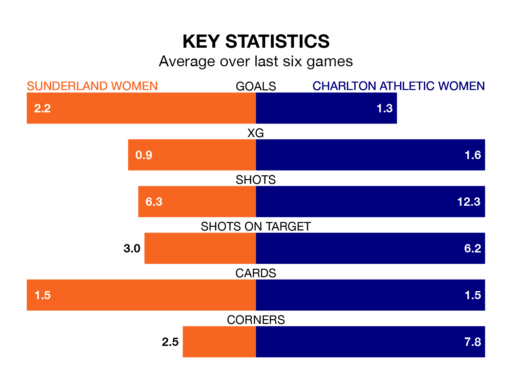

Two of the FA Women's Championship's top sides face each other at the Eppleton Colliery Football Ground in Sunday's early kick-off, when second-placed Sunderland Women host third-placed Charlton Athletic Women.
Sunderland have picked up 12 wins and four draws from 20 games so far this season, and sit one point above the visitors going into the 2pm match.
Charlton Athletic, meanwhile, have won 11 and drawn six, picking up 39 points.
In Claudia Moan, Sunderland can rely on one of the league's safest pair of hands. She has kept nine clean sheets in her 20 appearances this season, and no 'keeper has prevented the opposition scoring more often in the FA Women's Championship.
In Charlton Athletic's net, Sian Rogers has five clean sheets in 13 games.
With 31 goals in 20 games so far this season, the home team are scoring more than average in the league with 1.6 goals per game. And they are conceding fewer than average, letting in 17 goals at a rate of 0.8 per game.
The visitors, meanwhile, are average scorers, with 1.4 goals per game. They have conceded 0.8 goals per game.
In the last five years, Sunderland and Charlton Athletic have played each other on five occasions. Sunderland won two of them, Charlton Athletic one, and they drew twice.
On average, Sunderland scored 1.6 goals and Charlton Athletic 1.2 in those matches.
Their last meeting was on November 19, when they played out a 1-1 draw.
Sunderland are in reasonable form in the FA Women's Championship, with four wins and two losses from their last six games.
With three wins and a draw over that period, Charlton Athletic's form is slightly worse – they have taken 10 points from 18, compared to Sunderland's 12.
Sunderland's last match was on March 31, a 3-0 win against Watford Women, with Emily Scarr (two) and Elizabeta Ejupi getting the goals for Sunderland.
Charlton Athletic beat Watford Women 2-0 last time out, on April 14, with Melisa Filis and Melissa Johnson on the scoresheet.
Updated: 15:40 (UTC), 18/04/24